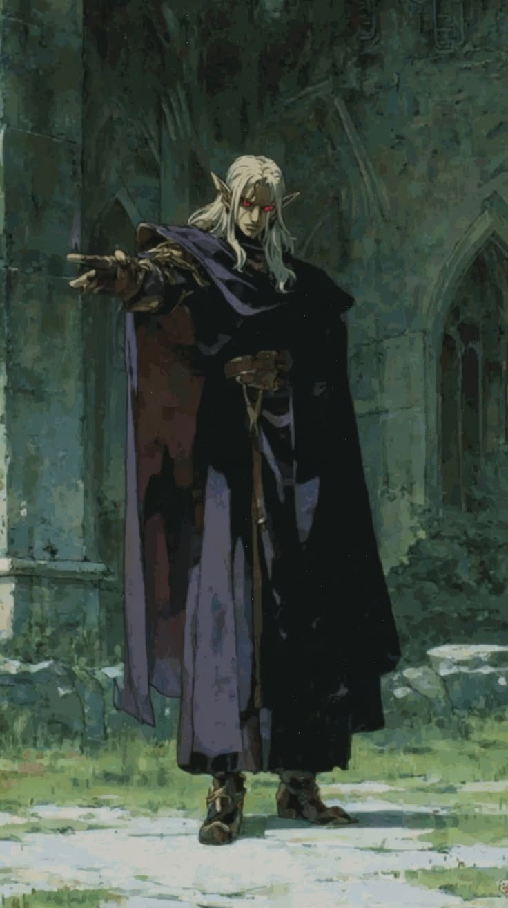
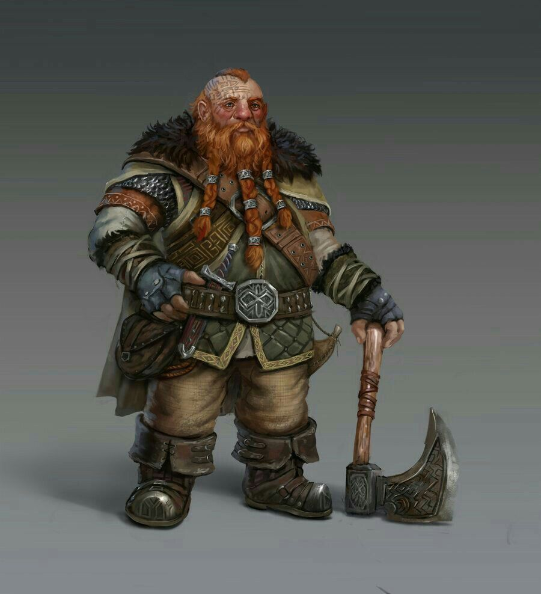
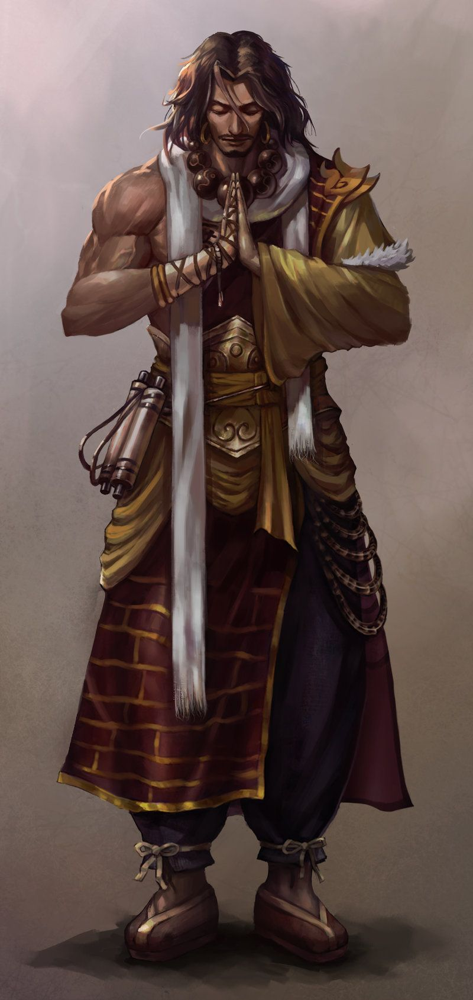

Os elfos são conhecidos por sua longevidade, agilidade e ligação com a magia.
Sua agilidade é uma de suas principais características.
Escolha a sua raça

Os elfos são conhecidos por sua longevidade, agilidade e ligação com a magia.
Sua agilidade é uma de suas principais características.

Os anões são conhecidos por sua resistência, força e habilidade com metais e pedras.
Sua resistência é uma de suas principais características.

Humanos são extremamente versáteis e podem seguir diferentes caminhos durante uma aventura.
A versatilidade é uma das principais características dos humanos.
As outras raças também possuem características próprias que podem influenciar a criação e o estilo de cada personagem.
| Raça | Característica | Estilo comum |
|---|---|---|
| Humano | Versatilidade | Qualquer classe |
| Elfo | Agilidade | Arqueiro / Mago |
| Anão | Resistência | Guerreiro |
| Halfling | Sorte | Ladino |
"Cada raça possui sua própria história, cultura e características."
Crônicas do mundo de Hélia
O termo RPG permite que diferentes personagens sejam utilizados em uma mesma aventura.